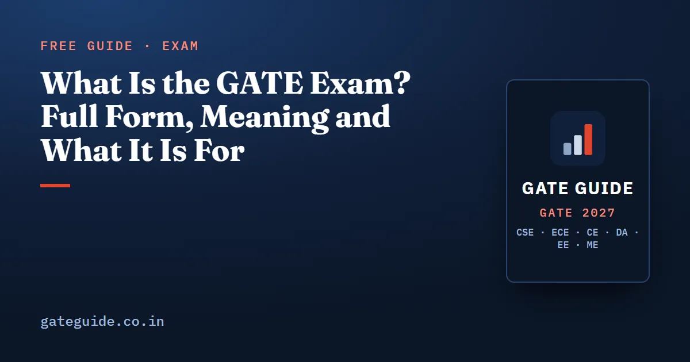

What Is the GATE Exam? Full Form, Meaning and What It Is For

The GATE exam full form is Graduate Aptitude Test in Engineering. If you searched "gate exam for what" or "gate meaning", the short answer is this: GATE is a national test whose score opens M.Tech, MS and PhD admissions and some public sector jobs. This guide explains what the exam is, who runs it, what the score does for you and whether you should take it.
In this guide
Key takeaways
- GATE stands for Graduate Aptitude Test in Engineering, a national computer-based test.
- It is run jointly by IISc and seven IITs, one of which organises it each year; GATE 2027 is organised by IIT Madras.
- GATE 2027 has 30 test papers, and every paper is 3 hours, 65 questions and 100 marks.
- The score is used for postgraduate and doctoral admission, often with a monthly stipend, and by several public sector undertakings for hiring.
- A GATE 2027 score is valid for three years from the result date of 19 March 2027.
- You can take GATE from the third year of any undergraduate degree, with no age limit.
What the words in "GATE" actually mean
Start with the name, because each word tells you something true about the exam.
- Graduate means it is a test for people at or near the end of a degree, and it leads to graduate study.
- Aptitude means it tests how well you can use what you learnt, not how much you can recite.
- Test in Engineering reflects where it began. Today it also covers science, architecture, humanities and other papers.
The official brochure describes GATE as testing your understanding of undergraduate subjects in engineering, technology and architecture, and of undergraduate and postgraduate subjects in science, humanities, commerce and arts. The exam is in English and is taken on a computer at a test centre.
The second term you need is the GATE score. It is not your marks. It is a number that shows your performance relative to everyone else who took the same paper that year. Marks are what you earn in the hall; the score is what institutes and employers read.
In one line: GATE is a national, computer-based aptitude test whose score, not your raw marks, is what admissions and recruiters use.
Who conducts GATE, and why the organiser changes
GATE is administered jointly by the Indian Institute of Science (IISc) and the Indian Institutes of Technology on behalf of the National Coordination Board, Department of Higher Education, Ministry of Education. Eight institutes share the work: IISc Bengaluru and seven IITs, namely Bombay, Delhi, Guwahati, Kanpur, Kharagpur, Madras and Roorkee.
Each year one of them becomes the organising institute. It runs the exam end to end: the website, registration, papers and results. The others manage the exam cities in their own zones.
| GATE year | Organising institute |
|---|---|
| 2023 | IIT Kanpur |
| 2024 | IISc Bengaluru |
| 2025 | IIT Roorkee |
| 2026 | IIT Guwahati |
| 2027 | IIT Madras |
IIT Madras organised GATE before in 2003, 2011 and 2019. Its official site for this cycle is gate2027.iitm.ac.in, and our guide to IIT Madras as the 2027 organiser explains what that means in practice. GATE Guide is independent and is not affiliated with IIT Madras, IISc or GATE.
The 30 papers: you choose your own subject
GATE is not one paper. GATE 2027 has 30 test papers, and you pick the one that matches your degree. A candidate may take one paper, or two papers from an officially allowed list of combinations.
| Group | Example paper codes |
|---|---|
| Core engineering | CE, CS, EC, EE, ME, CH, IN, PI |
| Other engineering | AE, AG, BM, BT, ES, GE, MN, MT, NM, PE, RA |
| Data science | DA |
| Science and mathematics | CY, PH, MA, ST, GG, EY, XL |
| Multi-section papers | XE (engineering sciences), XH (humanities and social sciences) |
| Architecture | AR |
Robotics and Automation (RA) is new for 2027. The brochure also notes that Textile Engineering and Fibre Science is now a section of XE rather than a paper of its own.
Every paper shares the same frame. It lasts 3 hours and has 65 questions for 100 marks. Ten of those questions are General Aptitude, worth 15 marks, and they are common to all papers. The rest test your subject. Questions are MCQ (one correct option), MSQ (one or more correct options) or NAT (you type a number). Only a wrong MCQ costs marks: of a mark for a 1-mark question and for a 2-mark question. The full marking rules, which are common to every paper, are in the marking scheme guide.
Trap: "GATE" on a forum often means GATE CS or GATE ME. When you read a cutoff, a rank or advice, check which paper it is about before you use it.
What the GATE score is used for
This is the "gate exam for what" question, and the official answer has three parts.
1. Postgraduate and doctoral admission
A valid score lets you seek admission to master's and direct doctoral programmes in engineering, technology and architecture. It also covers doctoral programmes in relevant branches of science and humanities, at institutions supported by the Ministry of Education and other government agencies. Some colleges also use GATE for postgraduate admission without the ministry scholarship.
Each institute runs its own admission process. The brochure says ministry guidelines give at least 70% weightage to GATE performance, with the rest for any test, interview or academic record the institute uses.
2. Financial assistance while you study
The official opportunities page states the current figures. M.Tech students receive ₹12,400 a month, generally paid for 22 months. PhD students receive ₹37,000 a month for the first two years and ₹42,000 a month from the third to the fifth year. The admitting institute manages these and decides how many students get them.
3. Jobs in public sector undertakings
Several public sector undertakings have used GATE scores in recruitment. The brochure names, among others, BHEL, GAIL, IOCL, NTPC, ONGC, POWERGRID and SAIL, and calls its list non-exhaustive. Each employer publishes its own notice, papers and process, so read that notice rather than assuming.
Remember: The brochure is blunt about it. Qualifying GATE does not guarantee admission, a scholarship or a job; each institute and employer applies its own criteria.
How long the score lasts, and what "qualifying" means
The GATE 2027 score is valid for three years from the date results are announced. Results are due on 19 March 2027, so a GATE 2027 score can be used until about March 2030. After that, no information on it is available.
You get a scorecard only if you qualify, which means scoring at least the qualifying marks for your paper and category. For the general category, the brochure sets the qualifying mark as , where is the mean and the standard deviation of marks of everyone who took that paper. OBC-NCL and EWS candidates need of that figure, and SC, ST and PwD candidates need of it.
A worked example with made-up numbers
Suppose a paper's mean is 20 marks and its standard deviation is 12. These numbers are invented for illustration.
- Add them: .
- Cap at 40: .
- Floor at 25: . The general qualifying mark is 32.
- OBC-NCL and EWS: .
- SC, ST and PwD: .
So the qualifying mark always lands between 25 and 40 for the general category, whatever the paper. How marks then turn into a GATE score is a separate formula, explained step by step in how the GATE score is calculated.
Trap: Qualifying marks are not admission cutoffs. Institutes and employers set their own, usually much higher, bars.
Who should take GATE
You are eligible if you are in the third or higher year of any undergraduate degree, or have completed an approved degree in engineering, technology, architecture, science, commerce, arts or humanities. There is no age limit. The official FAQ also says you can appear any number of times.
That makes GATE worth considering in three situations:
- You want an M.Tech, MS or PhD at an institute supported by the Ministry of Education, with a stipend.
- You want a public sector job whose notice names your GATE paper.
- You are in third year and want a practice attempt before the attempt that counts. The score lasts three years, so even an early attempt can be useful.
If your goal is an MBA instead, GATE is the wrong test; that is a different exam with a different syllabus.
GATE 2027 at a glance
| Item | GATE 2027 |
|---|---|
| Organising institute | IIT Madras |
| Extended registration, with late fee | closes 12 October 2026 |
| Application correction window | 14 to 21 October 2026 |
| Exam city notification | 4 January 2027 |
| Admit card | date to be announced |
| Exam days | 6, 7, 13, 14, 20 and 21 February 2027 |
| Result | 19 March 2027 |
These dates are from gate2027.iitm.ac.in, checked on 10 October 2026, and the site says they are liable to change. If you have not applied, the fees and form are covered in GATE 2027 registration and application fee, and every date in the GATE 2027 exam dates guide.
Once you know your paper, the useful next step is studying its past questions. Our books do that for six papers, CSE, ECE, CE, DA, EE and ME, with every past question counted against the official keys; see the books for every branch.
Quick revision
- GATE means Graduate Aptitude Test in Engineering, a national computer-based exam.
- IISc and seven IITs run it in turn; IIT Madras organises GATE 2027.
- There are 30 papers; each is 3 hours, 65 questions and 100 marks, with 15 marks of General Aptitude.
- The score serves M.Tech, MS and PhD admission, stipends, and some PSU recruitment.
- M.Tech assistance is ₹12,400 a month, generally for 22 months.
- A GATE 2027 score is valid for three years from 19 March 2027.
- Eligibility starts in the third year of any undergraduate degree, with no age limit.
- Qualifying does not guarantee admission or a job; check each institute's and employer's rules.
Frequently asked questions
What is the full form of GATE?
GATE stands for Graduate Aptitude Test in Engineering. It is a national computer-based examination conducted jointly by the Indian Institute of Science and the Indian Institutes of Technology on behalf of the National Coordination Board, Department of Higher Education, Ministry of Education. GATE 2027 is organised by IIT Madras.
What is the GATE exam for?
A valid GATE score is used for admission to master's and direct doctoral programmes in engineering, technology and architecture, and to doctoral programmes in science and humanities, often with financial assistance. Several public sector undertakings also use GATE scores to shortlist candidates. Qualifying does not by itself guarantee admission, a scholarship or a job.
How long is a GATE score valid?
The GATE 2027 information brochure says the score is valid for three years from the date the results are announced. GATE 2027 results are due on 19 March 2027, so a GATE 2027 score stays usable until about March 2030. After that period no information on the score is available.
Who conducts GATE 2027?
GATE is run jointly by IISc Bengaluru and seven IITs, namely Bombay, Delhi, Guwahati, Kanpur, Kharagpur, Madras and Roorkee, which take turns as the organising institute. IIT Madras is the organising institute for GATE 2027, having organised it earlier in 2003, 2011 and 2019.
Can a third-year student write GATE?
Yes. A candidate currently in the third or higher year of any undergraduate degree is eligible, as is anyone who has completed an approved degree in engineering, technology, architecture, science, commerce, arts or humanities. There is no age limit, and the official FAQ says you may appear any number of times.
Sources
- GATE 2027 official website (IIT Madras)
- GATE 2027 Information Brochure (official PDF)
- GATE 2027 opportunities (official)
- GATE 2027 FAQs (official)
- GATE 2027 important dates (official)
Dates, fees and the syllabus are set by the GATE 2027 organising institute and can change. Always confirm at gate2027.iitm.ac.in.